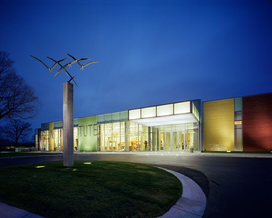
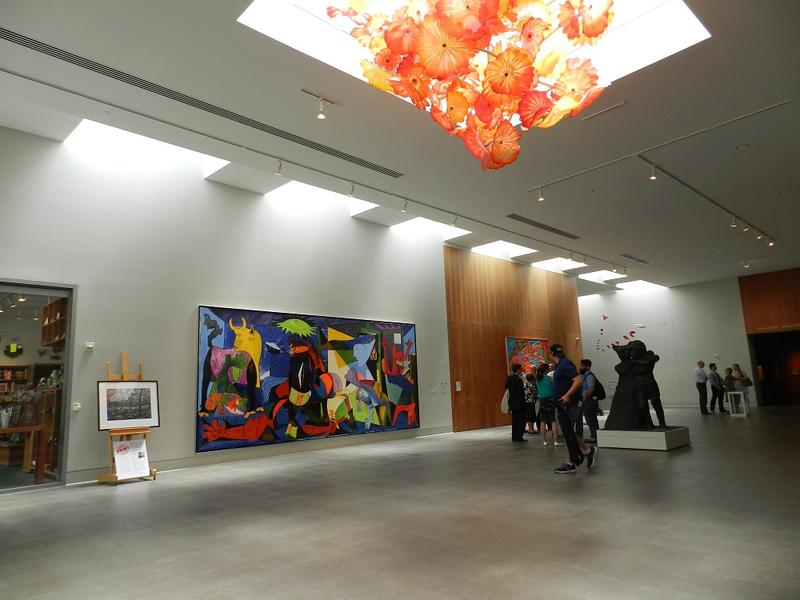

The Flint Institute of Arts was established in 1928 by our leaders because they wanted to create a place where students can pursue art classes; for 90 years, the FIA has been collecting art an accumulation of art and artifacts from across the globe. "The Flint Institute of Arts is the second-largest museum in Michigan and one of the largest museum-connected community art schools in the United States" FIA Website. The Flint Institute of Arts is open to our community for all of our people to take up the arts. Well as the contribution of art exceeds 8,000 from across the world. The FIA has various exhibits a year so that they can showcase the work of an artist for a certain quantity of time. The Flint Institute of Art School accepts at least 2,200 students a year. Also by offering "180 art classes, educator workshops, and studio demonstrations for participants ranging in age from toddlers to senior citizens"FIA Website. Along with a 45-curriculum for Pre-K and homeschooled children. The Art School teaches students ranging from drawing to glass blowing so, all of the students have a chance to participate in any field.

The Ruth Mott gallery is named; after Ruth Rawlings Mott. Mrs. Mott was a national philanthropist and community leader. She was originally from Texas, but after she met and married Charles Stewart Mott, she moved into his estate Applewood' located in Flint, Michigan. She became an active member of Flint, a local leader, and foundation trustee."The Ruth Gallery displays American naïve art from the early 19th century and early 20th century." (Ruth Mott Gallery) American naïve art is the art that was produced by an artist that did not receive any formal training. Before photographs, people had to stand or sit for hours to have their portraits painted to have a picture of their loved ones. Look at the example in the children's painting to the right. The painting's features of the children are off. Also, notice the girl holding a book; she is wearing all white, have pink roses. She also has a different background than her siblings. That shows a clue that the girl has passed away. In the past, paintings of children in white show the indication that they have died. That painting isn't the only one with a child in white in the gallery. All of the galleries have art that tells a story. Instead of just looking at the painting, I recommend finding the message that the artist is trying to convey.
The Henry Gallery; was named after John Henry. He foresaw many purchases to the FIA collection. Mr. Henry also supervised the extension and remodeling of the Art school and museum. He was very active at the Flint Institute of Arts. He appears as though he cared very deeply about the Flint Institute of Arts. The Henry Gallery was built in 2016 after the museum expanded. The expansion created a wing for the contemporary artist. So that visitors can see the process of students creating art in its stages of completion. The extension also included the glass furnace and metal foundry for hosting workshops. That expansion helped created the live demonstration of glass making for children and adults to see, the whole section for contemporary art and glassmaking. The wing was mainly made for showing a donation of Dr. Robert and Deanna Harris. It appears the new wing showcased received a lot of compliments. The remodeling of the Flint Institute of Art finished in the fall of 2017. After that, a new range of classes was open to the public to take. Glassmaking has been around since Mesopotamia. Glass was only for the wealthy at the time. The earliest glass object; was found in 2,000 BC. Every item we have today has a history.

The Bray Renaissance gallery was named after Viola Bray was a Flint philanthropist and avid art collector. She was born in 1873 in Flushing, but she always loves Flint. All of the art in the gallery was apart of Mrs. Bray's collection. Mrs. Bray's whole purpose of collecting the art was to share it with all of the people of Flint. She gave Flint a new world of art from the Renaissance and Baroque period bestowing Flint a new level of depth in our art world. Mrs. Bray died before she can see her gallery's grand opening to the public in 1961. Even though Mrs. Bray never saw the people love her gallery, it has been popular and well-loved in the Flint Institute of Art. To honor Mrs. Bray and the work she donated to the Flint Institute of Art a book was published that features 60 pieces of her collection. The book is called "Magnificence and Awe: Renaissance and Baroque art in the Viola E. Bray Gallery at the Flint Institute of Arts" this book is in the Flint Institute of Arts gift shop. So the next time you go to the Flint Institute of Art you should give the novel a read! FIA Gift Shop
The Keith LeFleur Library is named after a dedicated member of the Flint Institute of Art. Mr. LeFleur always volunteered and donated more than 1,000 books of fine art. The Keith LeFleur Library has more than 9,000 volumes of books about and art history. Visitors can read the books on-site. They are not allowed to take the books out of the library. The books are valuable artifacts to the museum that should be treasured to maintain its historical integrity; Keith LeFleur Library has a total of 9,000 volumes of books about and art history. The Keith LeFleur Library has books that go back to 1904. A lot of the books talk about the history of an art form in a time. So that if a student at the Art School is interested in art, they can research it. The volumes can range from architecture to porcelain so that a student or visitor can learn about any art. Mr. LeFleur was a traveler and student of the arts. Keith LeFluer then worked at the University of Asmara in Ethiopia. Until he finally became a parish priest retiring from the dioceses in Saginaw. The Keith LeFleur Library is a quality place to research art and art history.
The Dow Gallery; was named after Herbert Dow and his wife, Grace Dow. For the work they did in the Midland area, the gallery features Modern art. The modern art that was displayed; was favored in the Great Lakes region from 1910 to 1960. Around that time, desired art was surrealism, cubism, Pop Art, and impressionism. How most people define modern art; throws the old views of creating art out the window. Modern art is all about experimentation with new ideas for creating something. The modern art example is the picture below is a painting of a city. Traditional painting's job is to show an object, scenery, person, or tell a story. Modern art created images of something using shapes or with just paint. Now the art commonly uses today is contemporary art. Modern art and contemporary art often get confused with one another. The essential difference is that contemporary art is that contemporary; means an art of the moment. Contemporary art covets to tell you something that is going on in the world around you. Modern art covets to change your way of doing something. While contemporary art; covets to change your way of thinking about cultures, family, community, and gender.